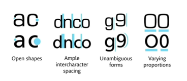

You only have 3 seconds to make a good impression.
We would like to avoid a messy clashing website. When designing a website, it would be good to keep fonts and colors consistent.
Design is a cheap and powerful way to improve your websites.
The art and science of creating a palette for a website.
Colors should be consistent with the theme of the website, and the message it imparts. A floral site might use bright flower like colors. A mountain climbing site might use a green, brown, and white color scheme.
The predominant color should tell a story and convey your message, so when you pick a color, it should be because it conveys something about what you are trying to promote.
We need to think about which colors to combine.
Colorwheels...
Be careful about choosing things like text colors. Choose a color too close to the background color and you risk straining the reader's eyes. Go for something dark and high contrast.
Why do we want to use design? Choosing the right font for the mood and occasion can be the difference between a murder or a romantic dinner date.
Serif -> The letters have feet. These were inspired by marble carvings, as chisels were difficult to lift once in stone. Used to make the text look more serious, authorative, and even older.
Sans Serif -> These have right angles and look contemporary and friendly. These are novel and straightforward and simple. Highly readable typeface. This is usually used for body text since they are readable.
You can tell how old a typeface looks based on the difference between the thinnest and thickest part of the letters.
Different fonts have different moods.
Readability and legebility are also important. It is important to consider how pleasant it is to read the letters.
Humanist Typeface is readable.
What to look for in fonts? Open shapes, ample intercharacter spacing, unambigous forms, and varying proportions.
You should stick to two fonts to one design. It makes it look cleaner and tighter. Find simular moods and time eras.
Contrast serifs, so choose a serif and a non-serif font. And contrast the weights of these fonts.
avoid the following fonts: Comic Sans, Kristen, Curlz, Viner, Papyrus and difficult to read fonts
Lots of web designers start out by choosing font schemes and color palettes.
Font-size
font-size can be used to control the size of the website. This can be done via pixels or dynamic size (percent or EM)
100% for font is equal to 16 px. if we want a bigger size, we can change the percent to be larger or smaller. WE can also use EM. em is M, and 1 em is 16 px. 100% = 1 em = 16px.
Why would we choose one over another? In the case that there is someone who needs to zoom in or not. One thing that is important, the % and em are inherited.
The inheriting means that if headers are set to 2 em and the text is set to 5 em, then the total text size for the header is 7 em.
rem, ignores the parent's em. Not affected by prior sizes
Use REM because this is reliable, and not affected by other ems.
User interface design. Users are drawn to bigger and bolder things, which can be used to our advantage.
Hierarchy -> Most important information is conveyed first. This can be done through a poppy color for a higher hierarchy. Highlight the most important things with a pop of color. accent tones can pull an eye to color.
Size is also important. Your eyes go from big items to smaller items.
Layout of the website.
WE can create interest in a site by having a variety of items. Wikipedia pages are not a good example, since all the blocks of text are quite large.
There is an optimal length of paragraphs where they are not too short and they aren't too long. Too long and it becoems difficult to read while too short and it's awkward. The perfect amount of characters per line is 30-40. 6 words per line
Content that is chopped up into smaller pieces can be easier to read
Alignment
have the alignment of headers and body text line up
Reduce the number of alignment points. Look at all the design items and let them line up with one another,. Use a gridline to assist you. This makes the design look more coherent.
White space
Refers to an empty space were there is no element.
Lots of luxury shops inject whitespace to space their items out. Lots of items together looks like a discount store. Add in white space around each element to elevate the elements.
Design for your audience
If you are desiging for kids, make sure the design is fun and playful. Convey the idea for the audience, even if it is bolder or more colorful. Flexivility of design is important.
User Experience Design.
Think about desire paths. Design is an aestetic, which is forced on a user. User experience is unintrusive. This is how the user will use the site.
Simplicity. Never overwhelming is good. Always try to pare a design down
Consistency. Try to keep the experience consistent across the pages. for example, don't change up your buttons or searchbar on different pages.
Human reading pattern.
The most common reading pattern is the F layout. The most important content is on the left.
Z pattern. Used on facebook to account for people's reading patterns.
All platform design. Mobile responsive is important. This can also cause issue on the opposite direction as well. The website should reaarance itself according to differnet screens.
Try to avoid too many banners, and make sure to find a good balance and test the site.
Avoid dark patterns. This is bad user experience. Dark patterns trick someone into doing something that the designer wants.
This gives us a daily challenge for 100 days.
is used as a free online graphic design editor.
Big things draw attention first, so make sure to put the larger photos and text on top to establish the hierarchy.
You can publish canva products as a website (export for preview)
Always study other websites and try to learn what key elemements you like. Take these key elements and try to apply this to your own websites.